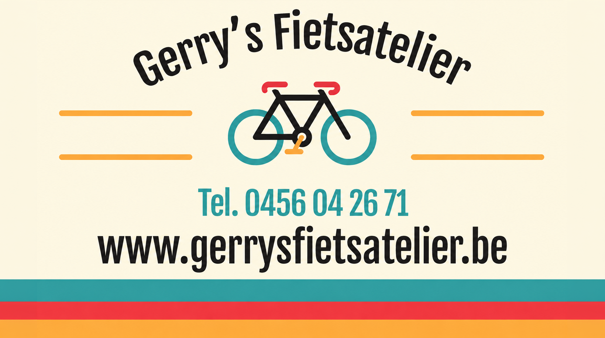

01
Video Production
Commercials, editing and full video production workflows from concept development to final delivery.

Graphic & Motion Designer
I create modern visual experiences through motion design, video production and digital design.
With a strong eye for detail and a workflow built around efficiency and collaboration, I focus on creating work that feels cinematic, minimal and technically refined.
Services
From motion graphics and post production to digital design and web experiences, each service is built around clean visuals and technically refined execution.
Commercials, editing and full video production workflows from concept development to final delivery.
Motion graphics, animated visuals and cinematic motion systems focused on rhythm, storytelling and clarity.
Visual effects, compositing and color grading focused on cinematic and polished final visuals.
Minimal and modern websites designed around usability, clean layouts and visual consistency.
Featured Projects
A cinematic exploration of Laarne Castle, capturing its historic architecture and atmosphere through carefully composed shots, visual storytelling and thoughtful editing.
View ProjectA series of animated explainer videos created for Circet, transforming complex internal information into clear, engaging visuals through custom illustrations, motion graphics and visual storytelling.
View Project
A vibrant visual identity built around bold typography, playful colors and a cohesive design language, bringing a fresh and recognizable personality to the brand.
View Project
A cinematic affiliate car review combining dynamic editing, storytelling and clean commercial visuals.
View Project
An editorial visual identity exploring photography, typography and graphic design.
View Project
Creating engaging short-form video content for a local bicycle workshop, combining dynamic editing, authentic visuals and storytelling tailored for social media.
View ProjectMotion showreel
Let’s work
Available for freelance projects, creative collaborations and visual production across motion, video and digital design.